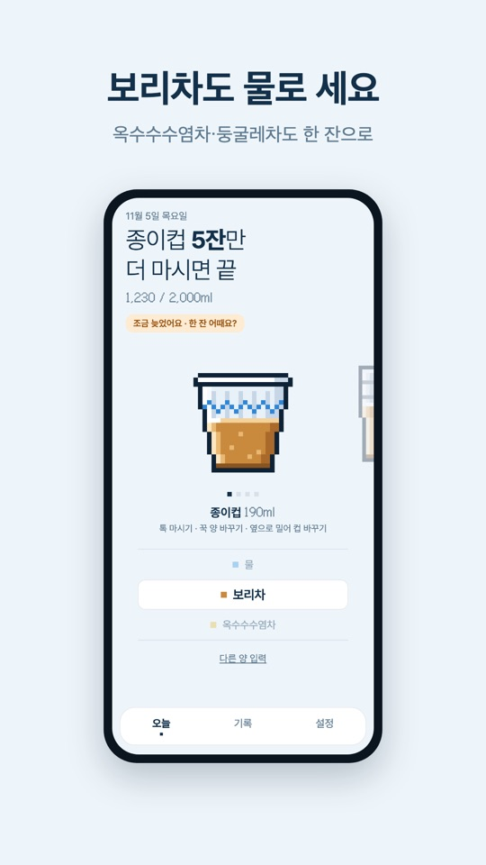

보리차·옥수수수염차도 물로 쳐도 될까?
집에서 끓인 곡물차는 보통 마신 물에 넣어 세요.
우리 집 냉장고엔 맹물보다 보리차가 더 많을 때가 있어요. 그럼 보리차 마신 건 "물 마신 양"에 넣어도 될까요?
마시는 음료도 수분으로 세요
'2020 한국인 영양소 섭취기준'(한국영양학회)은 하루 수분을 음식에 든 수분 + 물 + 음료를 합쳐서 봐요. 미국 메이요 클리닉(Mayo Clinic)도 물만이 아니라 차·우유 같은 음료도 하루 수분에 들어간다고 안내해요.
그래서 보리차·옥수수수염차·둥굴레차처럼 설탕 없이 물에 끓여 우린 차는 마신 물에 넣어 세는 경우가 많아요.
세기 전에 한 번 보면 좋은 것
| 음료 | 이렇게 보면 돼요 |
|---|---|
| 보리차·옥수수수염차·둥굴레차 | 설탕 없이 끓였다면 물처럼 세요 |
| 녹차·커피 | 수분으로 들어가지만 카페인이 있어요. 많이 마신다면 물과 따로 보는 사람이 많아요 |
| 주스·탄산음료·달달한 음료 | 당이 들어 있어요. 물 대신 마시기엔 아쉬워요 |
| 술 | 물 마신 양에 넣지 않는 게 좋아요 |
시판 차 음료는 당이나 첨가물이 들어간 것도 있으니 뒷면 성분을 한 번 보세요. 병이 있어 마시는 양을 조절해야 한다면 의사와 상의하세요.
차마다 색으로 남겨 두면 재밌어요
하루에 물 몇 잔, 보리차 몇 잔이었는지 나눠서 보면 "오늘은 보리차를 많이 마셨네" 하고 내 습관이 보여요.

함께 보면 좋은 글
참고: 2020 한국인 수분 섭취기준 설정과 앞으로의 과제 · Mayo Clinic: Water — How much should you drink every day?